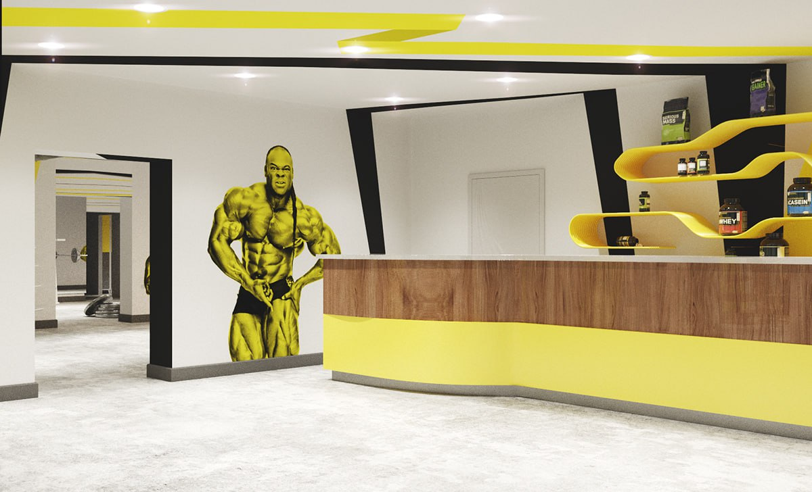

Главная страница
Функции ресепшен просты и очевидны. Его сотрудники встречают и регистрируют постояльцев, распределяют их по номерам, выдают ключи, информируют об основных и дополнительных услугах отеля, заботятся о доставке багажа в номер. Цель сотрудников ресепшен – создать комфортные и уютные условия для пребывания гостей.
Проблема заключается в проблематичном обслуживании большого потока клиентов в спортивных залах. Как правило, количество работников обслуживающего персонала не хватает для того, чтобы обслужить всех клиентов за максимально короткий срок. В связи с этим на ресепшене образуются метровые очереди, клиенты получают негативные эмоции, а организация теряет потенциальных клиентов.